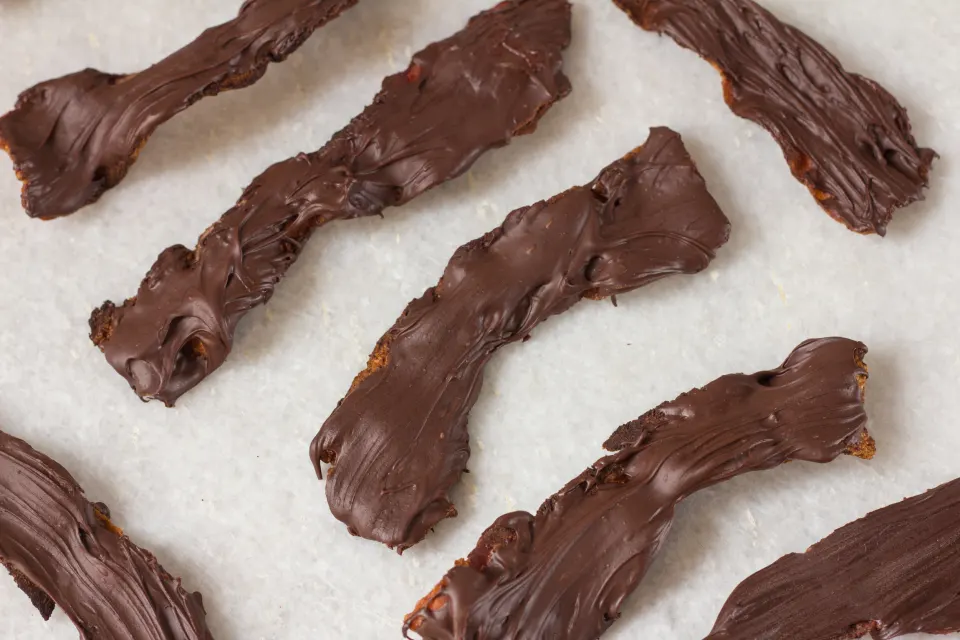

Description
You know there are a few things that are certain in life... death and bacon! Since we're getting older each second, I reckon it is time to take a risk. Namely covering bacon in chocolate. What are you waiting for!?
Ingredients
- 340g of semi-sweet chocolate morsels
- 454g of uncooked bacon (shoulder, back, whatever floats your boat... or pig.)
Steps
- Heat large skillet (or pan) on high and add bacon.
- Flip bacon as needed
- Fry until it appears crispy
- drain bacon on paper-towels to remove excess grease.
- While bacon is cooling, fill a medium pot or sauce pan with water and bring to medium heat.
- Place a smaller pan or pot above the medium pot or sauce pan
- Slowlt add the chocolate morsels into the top pan and stir until melted
- Using fingers or tongs dip the bacon strips into the chocolate
- Once coated lay the strips on the cooling rack.
- Once Cooled, put them in a fridge for 15min and then serve.